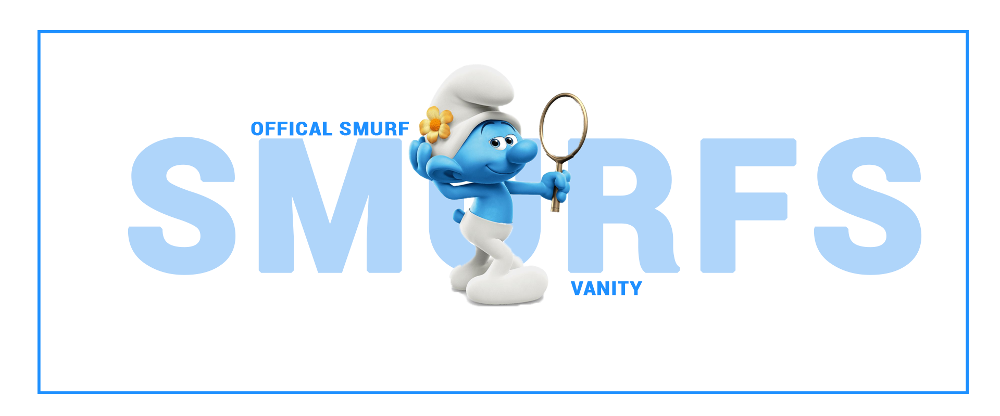
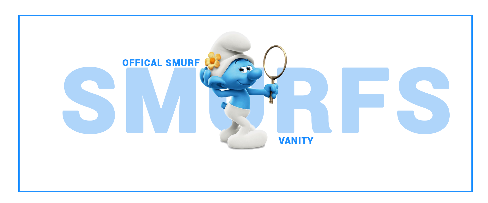

In Smurf Village, the Smurfs are preparing for the Festival of the Blue Moon. Meanwhile, Papa Smurf sees a vision of Clumsy Smurf reaching for a dragon wand and Gargamel capturing the Smurfs. Shortly after, Clumsy leaves to pick smurfroot and ends up leading Gargamel into the village. The Smurfs flee and Clumsy unknowingly runs toward the Forbidden Falls, with Papa, Smurfette, Grouchy, Brainy and Gutsy following him. The blue moon appears and creates a vortex that spirits the Smurfs to New York City. Gargamel and his pet cat Azrael follow them. The Smurfs end up in the apartment of Patrick and Grace Winslow, a married couple who are expecting their first child. After they explain their situation, the Winslows befriend them and give them shelter for the night. The next day, needing to find a "stargazer", the Smurfs follow Patrick to his workplace at Anjelou Cosmetics, believing he is a fortune-teller. Meanwhile, Gargamel extracts Smurf essence from a lock of Smurfette's hair, which gives him magic powers. While searching for the Smurfs, he wanders into Anjelou and impresses Patrick's boss, Odile, by restoring her elderly mother's youth with his magic. Upon hearing of Patrick's connection to the Smurfs, Gargamel chases him and the Smurfs into FAO Schwarz, where he steals a leaf blower and causes chaos while trying to catch the Smurfs. He is arrested and jailed, but manages to escape with the aid of a swarm of flies
The Blue Moon Festival is a significant event in Smurf Village, a time when the smurfs celebrate a special occasion linked to the appearance of a blue moon.
The Blue Moon's Role: In the animated movie, the blue moon is a magical element that opens a pathway between Smurf Village and the human world.
The Blue Moon Festival serves as the catalyst for the Smurfs' adventure, as the blue moon's appearance leads to them being transported to New York City.

In Smurf Village, the Smurfs are preparing for the Festival of the Blue Moon. Meanwhile, Papa Smurf sees a vision of Clumsy Smurf reaching for a dragon wand and Gargamel capturing the Smurfs. Shortly after, Clumsy leaves to pick smurfroot and ends up leading Gargamel into the village. The Smurfs flee and Clumsy unknowingly runs toward the Forbidden Falls, with Papa, Smurfette, Grouchy, Brainy and Gutsy following him. The blue moon appears and creates a vortex that spirits the Smurfs to New York City. Gargamel and his pet cat Azrael follow them. The Smurfs end up in the apartment of Patrick and Grace Winslow, a married couple who are expecting their first child. After they explain their situation, the Winslows befriend them and give them shelter for the night. The next day, needing to find a "stargazer", the Smurfs follow Patrick to his workplace at Anjelou Cosmetics, believing he is a fortune-teller. Meanwhile, Gargamel extracts Smurf essence from a lock of Smurfette's hair, which gives him magic powers. While searching for the Smurfs, he wanders into Anjelou and impresses Patrick's boss, Odile, by restoring her elderly mother's youth with his magic. Upon hearing of Patrick's connection to the Smurfs, Gargamel chases him and the Smurfs into FAO Schwarz, where he steals a leaf blower and causes chaos while trying to catch the Smurfs. He is arrested and jailed, but manages to escape with the aid of a swarm of flies
As we all know that the biggest competition of the history of smurf is here. THE BLUEMOON COMPETITION in this competition you have to select a Smurf character and make a detail study over their personality and you have to perform like a Smurf character on the stage the best performer will get the ultimate BLUE MOON TROPHY AND OTHER GIFTS kindly send your entry with above Register link